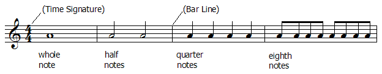

| The time signature (alternately known as the meter of a composition) is composed of two numbers which together resemble a fraction. |
| The reciprocal of the bottom number determines which type of note is regarded as one beat. |
| The top number determines how many of these beats occur in a single measure. |
| Thus, the time signature in the example above indicates that a quarter note equals one beat, and each measure must contain the equivalent of four beats of music, either in the form of notes or rests. |
|  |
Return to music theory.